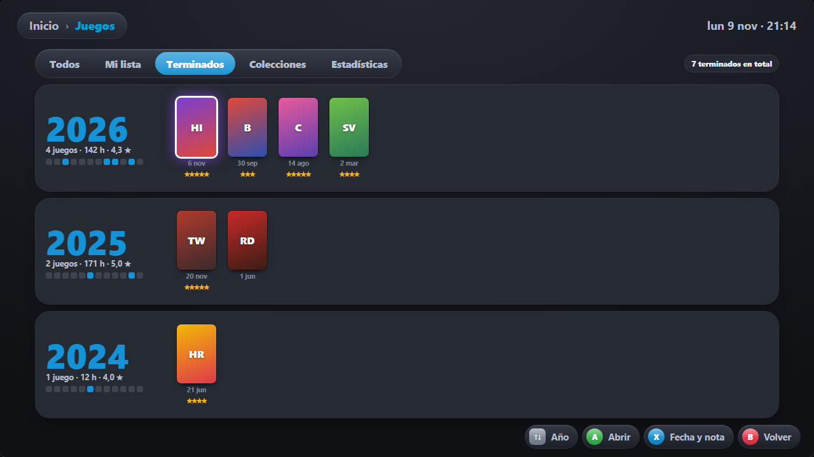
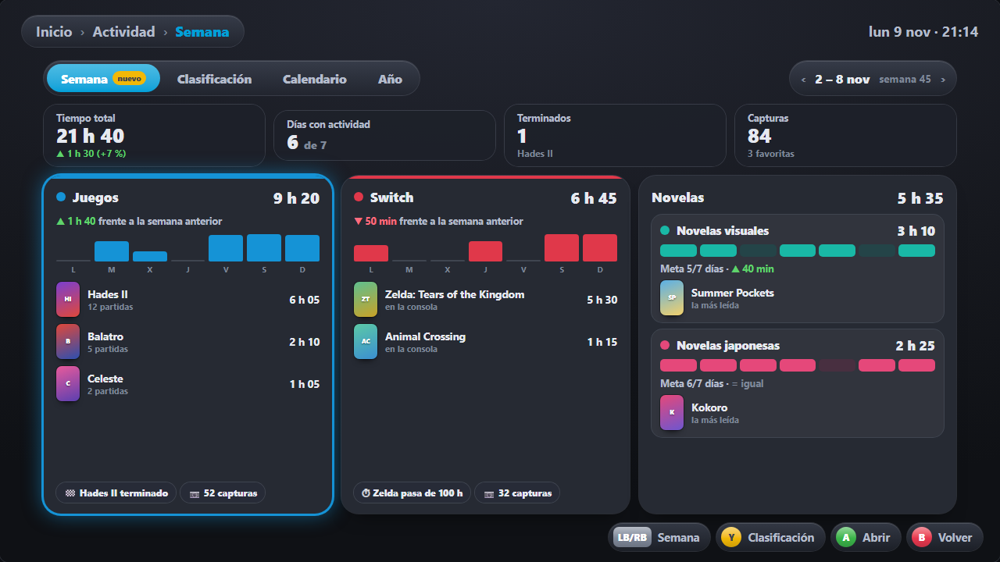
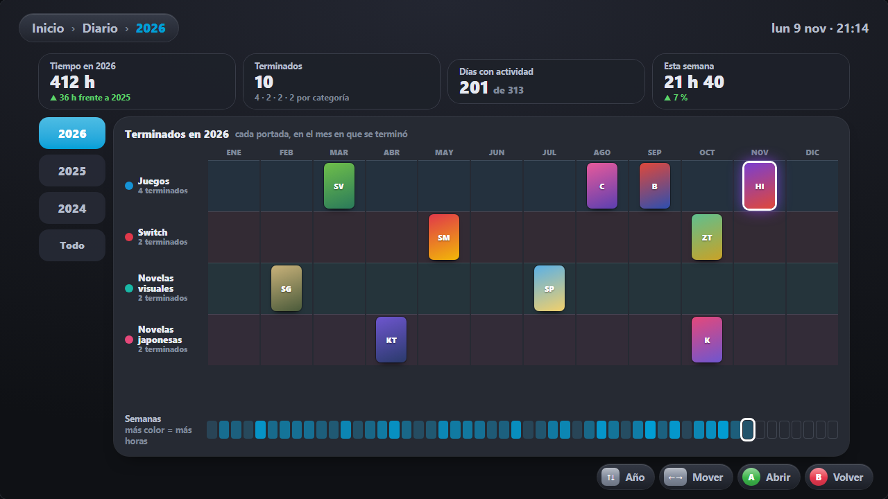
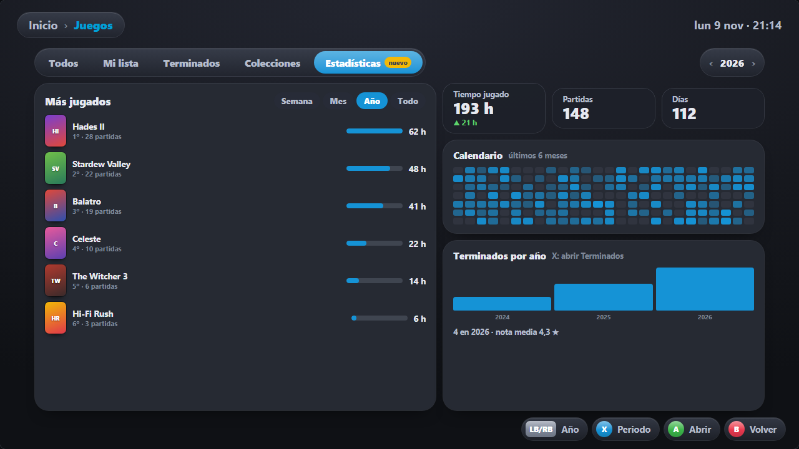

Cada chip usa solo el acento de la categoría en la que estás (cámbialo arriba) y gris para el resto. Pasa por encima para verlo enfocado y que repita su animación. Elige por letra.
Cifras de la categoría
Para la cabecera de Panorama: una cifra protagonista con su gráfico.
Tiempo jugadoA
+14 h esta semana · 63 juegos
A · Odómetro
Meta de hoyB
Te faltan 18 min para cerrar el día. Racha de 9 días.
B · Anillo de meta
Días con actividadC
5 de 7 días esta semana
C · Medidor
Esta semanaD
18h
23 %
D · Chispa con tendencia
Partida más largaL
5h 12min

Xenoblade sábado 8 nov
L · Récord
Próximo hitoH
94h
A 6 h de las 100 h en Persona 5
050 h100 h
H · Hito con bandera
Resumen semanal
Para la pestaña «Resumen semanal» y el aviso del lunes en Inicio. Lunes a domingo.
Día favoritoE
Sábado · 4 h 10 min
L
M
X
J
V
S
D
E · Barras con el día destacado
Meta de lecturaR
5 de 7 días cumplidos
R · Siete anillos
Frente a la semana pasadaG
18h
3 h 20 min
Esta18 h
Anterior14 h 40
G · Comparación
RachaF
12días
Un rescate usado (rayado)
F · Racha encadenada
Tu semana · 2 al 8 novP
26h
en total · 6 de 7 días
P · Semana por fuente (cada categoría con su color)
Lo mejor de la semanaQ
Persona 5 pasa de 50 h
Juegos · el jueves
Terminaste Hades
Juegos · 42 h en total
12 días leyendo seguidos
Novelas japonesas · tu mejor racha
Q · Destacados que rotan
Hora favoritaJ
22 h
Juegas sobre todo de 21 a 24 h
J · Reloj de 24 h
Capturas de la semanaK
38capturas



K · Abanico de capturas
Últimas 13 semanasI
I · Mapa de calor en ola
Juegos terminados
Aquí manda el violeta de «Terminado» de Mi lista, siempre con su nombre al lado (§3.4 de la guía).